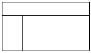
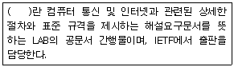
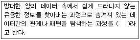
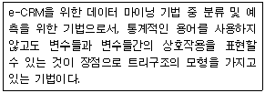
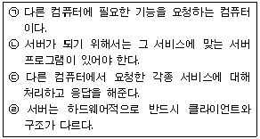
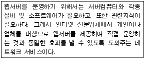
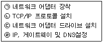
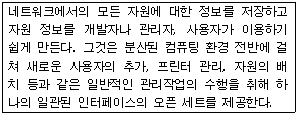
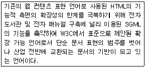

전자상거래운용사 (2004-09-12 기출문제)
1과목: 인터넷 일반
1. 다음 중 테이블을 삭제하고자 할 때 사용되는 SQL 명령문은?
- DELETE
- ALTER
- ERASE
- DROP
(정답률: 알수없음)

2. 다음 중 클라이언트측(Client-side)에서 해석되고 처리되는 언어가 아닌 것은?
- ASP
- CSS
- DHTML
- XML
(정답률: 알수없음)
3. 다음 중 웹 브라우저 상에서 하이퍼텍스트에 연결된 문서와 파일을 검색할 때 나타나는 문제점으로 가장 옳은 것은?
- 멀티미디어 자료에 접근 가능
- 하이퍼링크를 따라 이동하다 목적과 다른 사이트를 탐색하게 되는 방향상실(Disorientation) 발생
- 재방문을 위해 '즐겨찾기'에 사이트 주소 기록
- 열어본 페이지 목록 수록
(정답률: 알수없음)
4. 다음 중 DHTML에 대한 설명 중 가장 옳지 않은 것은?
- DHTML은 Dynamic HTML의 약어로서, 동적으로 변화하는 HTML을 의미한다.
- DHTML은 HTML과 자바스크립트를 이용하여 작성할 수 있다.
- DHTML은 인터넷익스플로러 2.0부터 지원된다.
- DHTML 기술을 이용하면 이미지 등이 자동으로 움직이는 것이 가능하다.
(정답률: 알수없음)
5. 다음 HTML 태그들 중에서 ＜FORM＞ 태그에 대한 설명으로 가장 잘못된 것은?
- ＜FORM＞ 태그의 ACTION 속성을 이용하여 폼(FORM)을 처리할 CGI 프로그램의 URL을 지정할 수 있다.
- ＜FORM＞ 태그의 METHOD 속성을 이용하여 사용자가 입력한 데이터를 CGI 프로그램에게 전달하기 위한 방식을 지정할 수 있다
- POST 방식은 데이터를 QUERY_STRING이라는 환경 변수에 저장하여 전달하는 방식이다.
- POST 방식을 사용할 경우 GET 방식에 비해 상대적으로 많은 양의 데이터를 전송할 수 있다.
(정답률: 알수없음)
6. 다음 중 HTML문서를 링크하기 위한 A 태그의 TARGET 속성에서 기본적으로 사용할 수 없는 이름은?
- _blank
- _top
- _parent
- _new
(정답률: 알수없음)
7. 자바스크립트에서 사용하는 변수이름에 관한 설명 중 가장 옳지 않은 것은?
- 변수는 반드시 알파벳 문자나 "_" 문자로 시작해야 한다.
- 스페이스, 콤마, 물음표, 인용부호는 사용할 수 없다.
- 대소문자를 구별하지 않는다.
- 예약어는 단독으로 사용할 수 없으나 문자열 속에 포함되어 사용하는 것은 가능하다.
(정답률: 알수없음)
8. 다음은 정보심의제도에 대한 설명이다. 가장 적절하지 않은 것은?
- 심의 과정은 '심의대상 인지 → 위원(회) 상정 → 심의 → 결과통보 → 회신 접수' 순서로 진행된다.
- 심의위원(회)은 전문위원, 전문위원회, 위원회 등으로 구성된다.
- 심의 및 시정 요구는 전기통신사업법 및 그 시행령에 의거하여 집행된다.
- 심의 대상은 일반에게 공개를 목적으로 유통되는 모든 정보가 해당된다.
(정답률: 알수없음)
9. LAN을 이용하여 인터넷에 접속하기 위하여 윈도우즈의 제어판에서 TCP/IP 환경설정을 하려고 한다. 수신할 데이터 패킷의 인터넷 주소에 포함되어있는 네트워크 주소의 식별을 위해 사용되는 항목은?
- IP 주소
- 서브네트 마스크
- 게이트웨이
- WINS 구성
(정답률: 알수없음)
10. 다음 중 메타 검색엔진에 대한 설명으로 가장 옳은 것은?
- 로봇 또는 스파이더라고 불리는 프로그램을 이용하여 인터넷상에서 정보를 검색하여 데이터베이스를 구축한다.
- 자체 데이터베이스를 갖고 있지 않으면서 사용자의 검색어를 다른 검색엔진으로 질의하여 결과를 보여준다.
- 검색 전문가들이 직접 인터넷상에서 웹 문서들을 검색하여 주제별, 계층별로 데이터베이스를 구축한다.
- 키워드 검색 기능과 주제별 디렉토리 서비스의 혼합된 기능을 제공하는 검색엔진이다.
(정답률: 알수없음)
11. 다음 중 웹 디자인에서 색상의 사용에 대한 설명으로 가장 옳지 않은 것은?
- 너무 많은 색을 사용하면 조잡한 느낌이 들 수 있으므로 한 화면에 4～8개 정도의 색을 사용하는 것이 적당하다.
- 너무 튀는 색을 사용하면 불안정한 느낌이 들 수 있으므로 파스텔 톤의 색보다는 원색을 사용하는 것이 적당하다.
- 배경색과 배경 무늬는 단순한 것을 이용하여 메인 이미지 및 텍스트가 배경에 묻히지 않도록 한다.
- 메뉴, 배경, 텍스트의 색상 이용시 전체 웹 페이지를 통하여 일관성을 유지하면서 색을 선택하도록 한다.
(정답률: 알수없음)
12. 메모장(Notepad)을 이용하여 HTML 문서를 작성하려고 한다. 다음 중 HTML 소스코드를 작성할 때의 주의사항으로 가장 옳지 않은 것은?
- 모든 태그는 반드시 시작하는 태그와 끝나는 태그의 쌍으로 구성하도록 한다.
- 대소문자는 구분하지 않으므로 대소문자를 혼용해서 보기 좋게 작성하도록 한다.
- 하나의 HTML 파일에는 헤드부분과 내용부분이 반드시 하나씩만 존재하도록 한다.
- 2칸 이상의 공백은 한 칸으로만 인정된다.
(정답률: 알수없음)
13. 다음 중 WWW(World Wide Web)을 처음 발표한 기관은?
- 유럽입자물리연구소
- 미국방성
- 미국 과학 재단
- 네트워크제공업체인 Sprint
(정답률: 알수없음)
14. 다음 중 애니메이션의 종류가 아닌 것은?
- 셀 애니메이션
- 플립북 애니메이션
- 스칼라 애니메이션
- 벡터 애니메이션
(정답률: 알수없음)
15. 다음 중 CGI(Common Gateway Interface)에 관한 설명으로 잘못된 것은?
- 웹서버에 있어 사용자의 요구를 응용프로그램에 전달하고 그 결과를 사용자에게 되돌려주기 위한 표준적인 방법이다.
- CGI를 사용해서 방명록, 게시판, 자료실을 구현할 수 있다.
- 사용자가 접속할 때도 스크립트이기 때문에 컴파일을 하지 않아도 된다.
- CGI는 C언어, Perl스크립트 등으로 구현할 수 있다.
(정답률: 알수없음)
16. 다음 중 개인정보보호에 대한 설명 중 가장 잘못된 것은?
- 서비스제공자가 만 13세 미만 아동의 개인정보를 수집하는 경우에는 법정대리인의 동의를 얻어야 한다.
- 서비스제공자가 개인정보를 수집하는 경우 반드시 해당 이용자의 동의를 얻어야 한다.
- 서비스제공자가 개인정보 수집에 대한 동의를 얻고자 하는 경우 미리 이용자에게 고지하거나 이용약관에 명시해야 한다.
- 회원탈퇴 또는 자신의 개인정보에 대한 열람?정정을 요청하는 경우에는 지체 없이 필요한 조치를 취하여야 한다.
(정답률: 알수없음)
17. 다음 그림과 같은 프레임으로 나누기 위해서 필요한 전체 HTML 파일의 개수는 몇 개인가?(문제 오류, 가답안 발표시 4번 정답으로 발표되었지만 확정답안 발표시 모두 정답처리 되었습니다. 여기서는 4번을 정답 처리 합니다.)

- 1개
- 2개
- 3개
- 4개
(정답률: 알수없음)
18. 다음 중 Usenet 사용 시 인터넷상에서 지켜야할 것으로 가장 맞지 않는 것은?
- 기사는 그 주제에 맞는 그룹의 게시판에 올리도록 한다.
- 개인적인 용도로 뉴스를 게시해서는 안 된다.
- 어떤 사항에 대하여 질문을 하기 전에 FAQ를 참조한다.
- 뉴스를 여러 곳에 올려서 자료가 공유될 수 있도록 한다.
(정답률: 알수없음)
19. 플러그인(Plug-in) 소프트웨어에 대한 다음 설명 중 가장 옳지 않은 것은?
- 웹 브라우저에서 기본적으로 제공하지 않는 서비스를 위해 필요로 하는 프로그램이다.
- 플러그인(Plug-in) 소프트웨어는 모두 단독으로 실행된다.
- 넷스케이프에서는 플러그인(Plug-in), 익스플로러에서는 애드온(Add-on) 프로그램이라고 부른다.
- 애니메이션, 음악, 동영상 등을 위해 개발되어 멀티미디어 기능을 이용할 수 있게 해준다.
(정답률: 알수없음)
20. 아래 보기의 괄호 안에 들어갈 인터넷 관련 문서로 가장 적절한 용어는?

- RFC(Request Of Comments)
- FYI(For Your Information)
- I-Ds(Internet Drafts)
- FAQ (Frequently Asked Questions)
(정답률: 알수없음)
2과목: 전자상거래 일반
21. 다음의 각 비용 중 재고관리의 대상이 아닌 것은 무엇인가?
- 재고유지비용
- 주문비용
- 재고부족비용
- 판매비용
(정답률: 알수없음)
22. 다음 중 인터넷 산업구성을 잘못 연결한 것은?
- 인터넷 기반산업 - 전자상거래
- 인터넷 지원산업 - 콘텐츠 산업
- 인터넷 지원산업 - 정보보호 산업
- 인터넷 응용산업 - 인터넷 문화 산업
(정답률: 알수없음)
23. 다음 중 전통적인 상거래 방식과 전자상거래 방식의 차이점이 아닌 것은?
- 유통채널
- 제품 구매에 대한 지불수단
- 마케팅 방식
- 상거래의 목적
(정답률: 알수없음)
24. 다음 중 소비자가 제품이나 서비스를 구매하는 일반적 과정을 가장 바르게 기술한 것은?
- 욕구인식→정보탐색→대체안 평가→구매결정→구매 후 평가
- 정보탐색→욕구인식→대체안 평가→구매결정→구매 후 평가
- 정보탐색→욕구인식→구매결정→대체안 평가→구매 후 평가
- 욕구인식→대체안 평가→정보탐색→구매결정→구매 후 평가
(정답률: 알수없음)
25. 다음 중 소비자 희망가격 산정모델에 대한 설명으로 가장 적절한 것은?
- 등록된 여러 종류의 판매 상점을 통해 최저가격의 상품이나 서비스를 얻을 수 있도록 하는 모델
- 여러 다른 경매 사이트를 검색할 수 있는 수많은 사이트를 제공하는 모델
- 소비자들이 자신들이 원하는 물품이나 서비스에 대해 직접 가격을 매길 수 있도록 하는 모델
- 구매자로 하여금 그룹할인을 얻기 위해서 대규모 집단 쇼핑을 할 수 있도록 하여주는 모델
(정답률: 알수없음)
26. 다음 중 물류의 기능을 가장 바르게 설명한 것은?
- 시간적 기능 : 생산과 소비의 장소적 불일치를 조정하는 기능이다.
- 장소적 기능 : 재화의 생산시기와 소비시기의 불일치를 조정하는 기능이다.
- 수량적 기능 : 생산자의 생산단위 수량과 소비자의 소비단위 수량의 불일치를 조정하는 기능
- 품질적 기능 : 생산자와 소비자를 매개로 운송에서 정보활동에 이르기까지의 모든 비용을 조정하는 기능
(정답률: 알수없음)
27. 다음 중 물류의 원칙으로 여겨지고 있는 7R에 해당되지 않는 것은?
- Right Commodity - 적절한 제품
- Right Price - 적절한 가격
- Right Customer - 적절한 고객
- Right Quality - 적절한 품질
(정답률: 알수없음)
28. 다음 중 효율적인 택배 서비스를 위하여 고려되어야 할 점이 아닌 것은?
- 편리한 주문화면
- 보유중인 재고 수량을 확인 가능하여야 한다.
- 상품의 재고를 충분히 유지하고 있어야 한다.
- 배달 가능일을 제시할 수 있어야 한다.
(정답률: 알수없음)
29. 다음 내용 중 ( )에 들어갈 알맞은 용어는?

- Data Mining
- CRM(Customer Relationship Management)
- Database Marketing
- Direct Marketing
(정답률: 알수없음)
30. 다음 중 인터넷을 이용한 광고방식의 특징에 대한 설명으로 가장 잘못된 것은?
- 광고의 전달범위가 넓은 편이다
- 광고비용이 많이 드는 편이다.
- 고객의 요구를 반영하는 등 상호작용성이 높은 편이다.
- 자사에 적합한 고객들만을 선별적으로 타겟팅하는데 효율적이다.
(정답률: 알수없음)
31. 다음 중 인터넷에 대한 설명 중 가장 잘못된 것은?
- 인터넷은 ARPANET이 그 전신이다.
- 인터넷은 TCP/IP 프로토콜을 사용한다.
- WWW과 e-Mail은 인터넷의 대표적인 응용서비스이다.
- 인터넷은 그 범용성을 위해 OSI 7 Layer를 그대로 사용한다.
(정답률: 알수없음)
32. 다음 중 인터넷 마케팅의 특성을 잘못 설명한 것은?
- 고객과의 쌍방향 의사소통이 가능
- 표적고객을 목표로 한 광고가 가능
- 저렴한 비용으로 수행
- 매스미디어에 비해 광고효과 측정이 어려움
(정답률: 알수없음)
33. 다음은 전통적 상거래와 인터넷 상거래를 비교한 것이다. 옳은 것은?(전통적 상거래, 인터넷 상거래순으로 적혀 있습니다.)(문제 오류, 가답안 발표시 1번 정답으로 발표되었지만 확정답안 발표시 모두 정답처리 되었습니다. 여기서는 1번을 정답 처리 합니다.)
- 마케팅활동 : 1:1 마케팅, 대중 마케팅
- 거래대상지역 : 특정 회사의 범위, 국내의 범위
- 거래시간 : 24시간 영업, 제한된 영업시간
- 고객정보획득 : 시장조사 및 영업사원, 온라인으로 수시획득
(정답률: 알수없음)
34. 다음은 무슨 기법을 설명한 것인가?

- 연관 규칙
- 군집 분석
- 의사결정나무
- 신경망 모형
(정답률: 알수없음)
35. 다음 중 e-Marketplace의 도입과 관련된 장단점으로 옳지 않은 것은?
- 물류구조 변화를 통한 서비스 향상
- 글로벌 네트워크를 통한 시장 확대
- 물류 기능의 자체 수행을 통한 원가 절감
- 기업 탐색비용의 절감 효과
(정답률: 알수없음)
36. 다음 중 VAN이나 인터넷 등을 이용하여 부품의 상호조달, 유통망의 공유 등을 목적으로 상거래가 이루어지는 전자 상거래 유형은 어느 것인가?
- B to B
- B to C
- P to P
- G to B
(정답률: 알수없음)
37. 다음 중 인터넷마케팅 전략에 포함되는 것으로 보기 어려운 것은?
- 컨텐츠(Contents) 전략
- 커뮤니티(Community) 전략
- 커머스(Commerce) 전략
- 컨트롤(Control) 전략
(정답률: 알수없음)
38. 다음 중 디지털경제(Digital Economy)의 특징으로 가장 옳지 않은 것은?
- '연결의 경제성(Econmy of Network)'으로 인해 네트워크의 비중이 높아짐에 따라 생산성 증가가 경제 전반에 파급효과를 가져온다.
- IT(정보기술)산업에서는 수확체증 현상이 발생하고 유통비용이 감소한다.
- 디지털경제로 이행하기 위해 IT산업에 대한 대규모 투자가 이뤄지게 된다.
- 다방면에서 '디지털 격차(digital divide)'가 축소된다.
(정답률: 알수없음)
39. 다음 중 전자 상거래 지불방법 중 전자결재에 의한 방법이 아닌 것은?
- 신용카드결재
- 전자수표결재
- 계좌이체결재
- 무통장입금결재
(정답률: 알수없음)
40. 인터넷이 확산되면서 나타나는 사용자들의 특성변화 추세를 가장 바르게 설명하지 못한 것은?
- 사용자의 연령층이 고연령 층에서 청소년층으로 확산되고 있다.
- 여성사용자의 비율이 증가하고 있다.
- 교육수준이 높은 사람들에서 낮은 사람들로 확산되고 있다.
- 학생, 전문직에서 점차 다양한 직업군으로 사용층이 확대되고 있다.
(정답률: 알수없음)
3과목: 컴퓨터 및 통신 일반
41. 다음은 운영체제의 인터럽트(interrupt)에 관련된 설명이다. 이에 대한 설명 중 가장 옳은 것은?
- 운영체제는 메모리와 다른 장치를 사용하려는 요구에 응답하고, 장치에 접근하는 프로그램들을 전부 제거한다.
- 사용자가 폴더내의 파일리스트를 운영체제에게 요구하면 운영체제는 컴퓨터의 하드디스크로 인터럽트 요청을 보낸다.
- 인터럽트 요청은 IRQ(Interrupt ReQuest)이다.
- 모든 OS에서 인터럽트 처리순서는 사용자가 임의로 조정할 수 있다.
(정답률: 알수없음)
42. 다음 중 윈도2000서버에서 사용자의 권한 및 허가를 부여하는데 관련된 용어 중 가장 옳지 않은 것은?
- 계정(Account)
- 허가(Permission)
- 커뮤니티 그룹(Community Group)
- 유니버설 그룹(Universal Group)
(정답률: 알수없음)
43. 다음은 Win32/Nimda 바이러스에 대한 설명이다. 가장 옳지 않은 것은?
- Win32/Nimda 바이러스는 아웃룩 주소록을 검색하여 메일로 전파된다.
- Win32/Nimda 바이러스는 읽기/쓰기 공유되어 있는 경우 IIS 웹 서버의 취약점을 이용한다.
- Win32/Nimda 바이러스의 감염을 막으려면 아웃룩과 IIS를 패치해야 한다.
- Win32/Nimda 바이러스는 특정일이 되면 동작하므로 해당 날짜에 컴퓨터를 쓰지 않도록 한다.
(정답률: 알수없음)
44. 다음 중 URL(Uniform Resource Locator)의 표현이 가장 잘못된 것은?
- http://xxx.xxx.xxx
- ftp://xxx.xxx.xxx
- telnet://xxx.xxx.xxx
- mailto://xxx@xxx.xxx
(정답률: 알수없음)
45. 다음에서 서버에 대한 설명을 가장 바르게 나열한 것은?

- (ㄱ), (ㄴ)
- (ㄴ), (ㄹ)
- (ㄴ), (ㄷ)
- (ㄱ), (ㄹ)
(정답률: 알수없음)
46. 인터넷 사용자간에 자신의 컴퓨터와 상대방 컴퓨터가 서로 연결되어 통신을 하기 위해 서로 지켜야 할 규칙을 프로토콜(통신규약)이라고 한다. 다음 중 인터넷의 통신프로토콜과 가장 관련이 적은 것은?
- HTTP
- SMTP
- 이더넷(Ethernet)
- FTP
(정답률: 알수없음)
47. 다음은 무엇을 설명한 것인가?

- ISP
- 웹 호스팅
- 로밍 서비스
- 포탈 서비스
(정답률: 알수없음)
48. 다음 중 SSL(Secure Socket Layer)과 관련한 설명으로 가장 옳지 않은 것은?
- SSL은 웹 브라우저와 웹 서버 사이의 통신에 암호화를 통한 기밀성을 제공한다.
- SSL은 웹 서버 인증이나 웹 클라이언트에 대한 인증을 제공할 수 있으며, 이 경우 해당 서버나 클라이언트는 공개키 인증서를 갖고 있어야 한다.
- SSL은 넷스케이프 사에서 개발하였으며, 따라서 마이크로소프트의 인터넷 익스플로러에서는 채택되지 않고 있다.
- SSL에서 사용되는 암호 알고리즘은 여러 가지가 있으며, 웹 서버와 클라이언트 사이의 협상에 의해 사용될 알고리즘이 정해진다.
(정답률: 알수없음)
49. 다음 중 클라이언트/서버에 대한 설명 중 틀린 것은?
- 클라이언트는 다른 프로그램에 서비스를 요청하는 프로그램 또는 하드웨어이다.
- 서버는 클라이언트의 요청에 대해 응답을 해주는 프로그램 또는 하드웨어이다.
- 클라이언트/서버 모델은 반드시 두개의 컴퓨터 프로그램 사이에만 이루어지는 역할 관계를 나타낸 것이다.
- 클라이언트의 요청 서비스에 따라 여러 개의 서버를 구성할 수 있다.
(정답률: 알수없음)
50. 다음 중 네트워크 프로토콜에 대한 설명으로 가장 옳지 않은 것은?
- DNS(Domain Name System): IP 주소를 실제 물리적 주소로 바꿔주는 서비스를 지원하는 프로토콜
- HTTP(Hyper Text Transfer Protocol): HTML 문서를 주고받기 위해 사용하는 프로토콜
- NNTP(Network News Transfer Protocol): 인터넷 뉴스 서비스를 지원하는 프로토콜
- SMTP(Simple Mail Transfer Protocol): 전자우편 서비스를 지원하는 프로토콜
(정답률: 알수없음)
51. 다음 중 메인보드를 구성하고 있는 포트 및 커넥터에 관한 설명으로 가장 옳지 않은 것은?
- AGP슬롯 : Accelerated Graphics Port의 약자로 비디오카드와 메인 메모리간의 전용버스규격이다.
- USB커넥터: Universal Serial Bus의 약자로 주변 기기와 연결을 위한 규격의 하나이다.
- IDE커넥터: Integrated Device Electronics의 약자로 주로 사운드카드의 연결을 위해서 사용된다.
- PCI슬롯 : Peripheral Component Interconnect의 약자로 확장보드용 버스규격이다.
(정답률: 알수없음)
52. 다음 중 정보통신 장비에 관한 설명으로 가장 옳지 않은 것은?
- PBX(Private Branch Exchange) : 전화국의 교환기를 소형화한 것으로 개인이 많은 전화기를 사용할 때 사용하는 소형 교환 장치.
- 라우터(router) : LAN을 연결해주는 장치로서 정보에 담긴 수신처 주소를 읽고 가장 적절한 통신통로를 이용하여 다른 통신망으로 전송하는 장치.
- 게이트웨이(Gateway) : 컴퓨터와 네트워크케이블 간의 인터페이스 장치로 데이터를 전송 및 제어하는 장치.
- 리피터(repeater) : 디지털 방식의 통신선로에서 전송신호를 재생하여 전달하는 전자통신장치.
(정답률: 알수없음)
53. 다음 보기에서 네트워크에 접속하기 위한 순서를 가장 올바르게 나열한 것은?(문제 오류, 모두 정답처리 되었습니다. 여기서는 1번을 정답 처리 합니다.)

- (ㄱ) → (ㄴ) → (ㄷ) → (ㄹ)
- (ㄴ) → (ㄱ) → (ㄷ) → (ㄹ)
- (ㄱ) → (ㄴ) → (ㄹ) → (ㄷ)
- (ㄴ) → (ㄱ) → (ㄹ) → (ㄷ)
(정답률: 알수없음)
54. 다음 중 인터넷서비스와 그에 맞는 프로토콜이 가장 잘못 연결된 것은?
- WWW - HTTP
- FTP - FTP
- E-Mail - Mail
- Telnet - TCP/IP
(정답률: 알수없음)
55. 다음 중 TCP/IP 프로토콜에 관한 설명으로 잘못된 것은?
- 프로토콜 구조는 응용 계층, 전송 계층, 인터넷 계층, 망 접속 계층의 4계층으로 표현된다.
- 응용 계층에서는 응용 서비스에 관련된 FTP, TELNET, SMTP 같은 응용이 구현된다.
- TCP는 OSI 참조 모델의 전송 계층에 대응되고, IP는 네트워크 계층에 대응된다.
- TCP 프로토콜은 IP 프로토콜의 결합적 의미로 TCP가 IP보다 하위층에 존재한다.
(정답률: 알수없음)
56. 다음은 윈도 2000 서버의 중요 기술에 대한 설명이다. 다음의 설명으로 옳은 것은?

- 도메인 네임 서버(Domain name Server)
- 액티브 디렉터리(Active Directory)
- IP 스푸핑(Spoofing)
- 넷 뷰(NetBEUI)
(정답률: 알수없음)
57. 다음 중 일반적으로 범용 컴퓨터를 구입할 때 가격에 영향을 주는 요소들을 중요도 순서대로 바르게 나열한 것은?
- HDD 크기 → RAM의 크기 → 모니터 크기 → CPU 속도
- 본체크기 → RAM의 크기 → HDD 크기 → 모니터 크기
- 본체색깔 → RAM의 크기 → HDD 크기 → 마우스 속도
- CPU 속도 → RAM의 크기 → HDD 크기 → 모니터 크기
(정답률: 알수없음)
58. 다음 중 비대칭 디지털 가입자 회선 (ADSL) 에 대한 설명으로 잘못된 것은?
- 기존의 전화선을 이용해서 고속 데이터 통신을 지원한다.
- 업로드 속도와 다운로드 속도가 같다.
- 전화와 데이터 통신을 동시에 사용할 수 있다.
- 인터넷, VOD, 홈쇼핑 같은 비대칭 서비스에 적합한 통신 기술이다.
(정답률: 알수없음)
59. 다음은 무슨 언어를 설명한 것인가?

- Java
- Perl
- XML
- PHP
(정답률: 알수없음)
60. 다음 중 컴퓨터 해킹 용어 중 통신선상에 전송되고 있는 정보를 상대방 모르게 가로채는 방법을 무엇이라 하는가?
- 스푸핑(spoofing)
- 스니퍼(sniffer)
- 트랩 도어(trap door)
- DOS(Denial of Service)
(정답률: 알수없음)
설명: DROP은 데이터베이스에서 테이블을 삭제하는 SQL 명령문입니다. DELETE는 테이블에서 데이터를 삭제하는 명령문이며, ALTER는 테이블 구조를 변경하는 명령문입니다. ERASE는 SQL에서 사용되지 않는 명령문입니다.